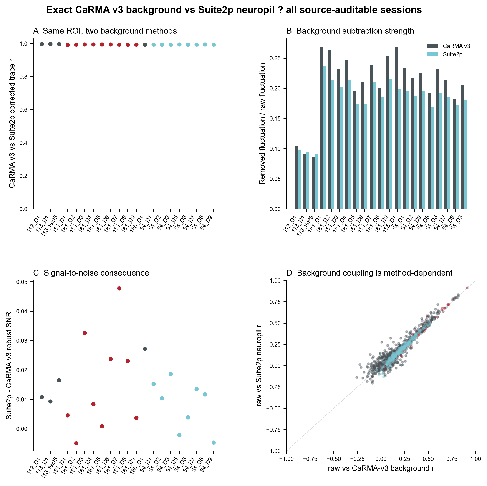
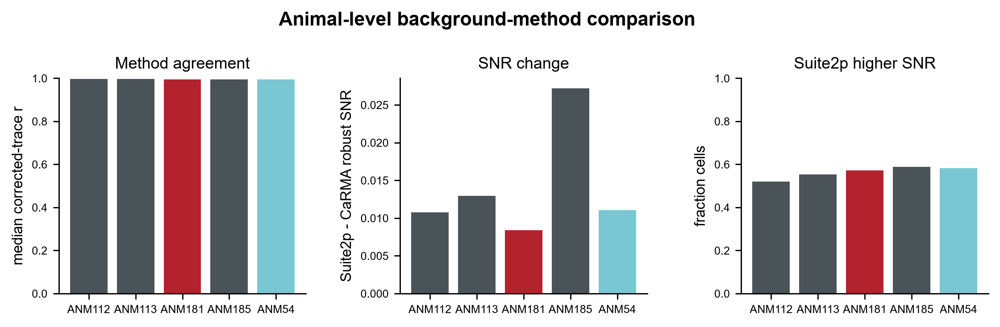
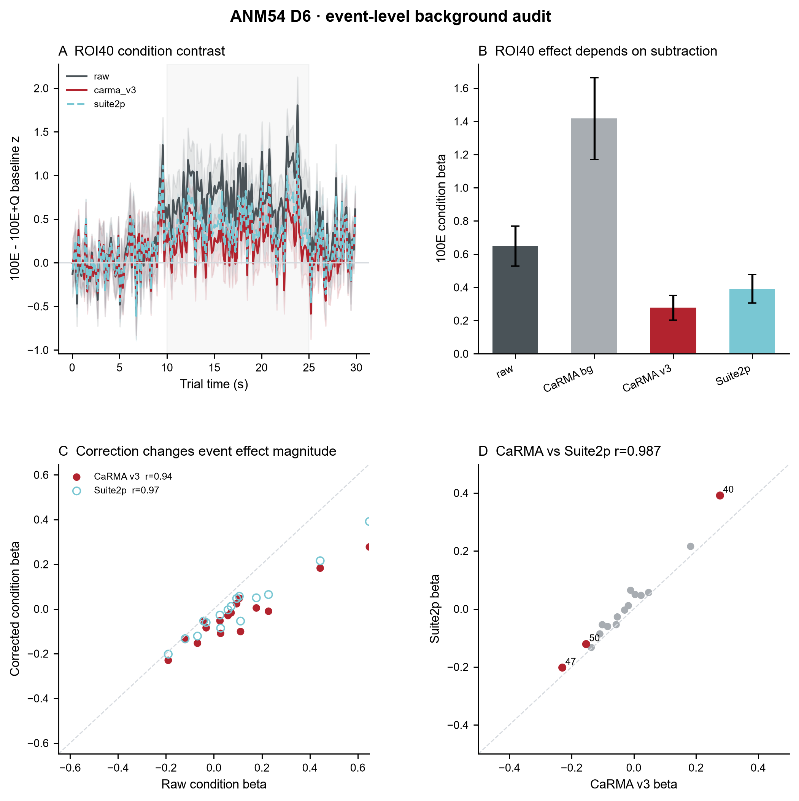
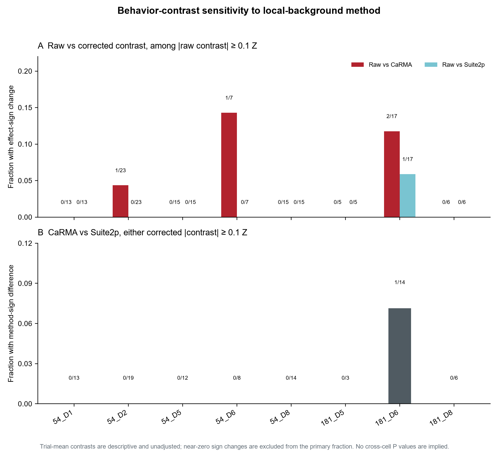

Background-method agreement is high; subtraction itself remains biologically consequential
The source-level rerun uses the same ROI masks and registered movies, with two independently defined local-background models. CaRMA v3 is reproduced from the historical MATLAB geometry and validated against frozen checkpoints before comparison with Suite2p-style neuropil correction.

Animal-level summary
| Animal | Sessions | Cell x session | Median method r | Suite2p - CaRMA SNR | Fraction cells Suite2p higher SNR |
|---|---|---|---|---|---|
| ANM112 | 1 | 150 | 0.9976 | 0.011 | 0.52 |
| ANM113 | 2 | 248 | 0.9971 | 0.013 | 0.55 |
| ANM181 | 9 | 158 | 0.9942 | 0.008 | 0.57 |
| ANM185 | 1 | 199 | 0.9938 | 0.027 | 0.59 |
| ANM54 | 8 | 199 | 0.9939 | 0.011 | 0.58 |

Biological sensitivity: D6 event effect

Behavior contrasts across every session with verified condition labels
In eight condition-verified sessions (164 cell×session entries), the raw-versus-corrected response direction can change, but most flips occur for near-zero effects. The plot therefore distinguishes all sign changes from a descriptive sensitivity subset with absolute raw contrast ≥0.1 baseline Z. This is not a significance threshold, and the trial-mean contrasts are unadjusted; the covariate-adjusted D6 regression above remains the formal D6 analysis.

Download per-session contrast sensitivity summary.
Ten-mouse coverage: source-level and processed-only tiers are kept separate
| Mouse | Capability | Current background audit |
|---|---|---|
| 54 | RAW_TRACE_FULL_REFERENCE | 8 sessions, exact CaRMA-v3 vs Suite2p source-level rerun complete |
| 181 | RAW_TRACE_FULL_REFERENCE | 9 sessions, exact source-level rerun complete |
| 112 | RAW_TRACE_FULL_REFERENCE | Current recovered source-level session complete; not presented as a longitudinal equivalent to 54/181 |
| 113 | RAW_TRACE_FULL_REFERENCE | D1 + test5 source-level rerun complete |
| 185 | RAW_TRACE_FULL_REFERENCE | Current recovered source-level session complete |
| 492241 | PROCESSED_MATRIX_SAME_CELL | Processed-matrix sensitivity only; no false framewise Suite2p re-extraction |
| 496190 | PROCESSED_MATRIX_SAME_CELL | Processed-matrix sensitivity only |
| 496191 | PROCESSED_MATRIX_SAME_CELL | Processed-matrix sensitivity only |
| 378231 | LEGACY_PROCESSED_MATRIX | Legacy matrix sensitivity only |
| 372321 | LEGACY_PROCESSED_MATRIX | Legacy matrix sensitivity only |
The ten biological mice are therefore all retained, but only five currently support source-level background re-extraction from recoverable frame data. This distinction is part of the authority model rather than hidden in the methods.
Every ROI, every source-auditable session
Open the complete single-cell source-method atlas →. Each ROI has the full raw/CaRMA-v3/Suite2p single-trial heatmaps, response mean ± SEM, and verified condition effects where trial labels exist. The all-cell maps do not infer behavioral conditions for sessions without trial metadata. ANM54 tracked-cell day-by-day comparisons →.
Downloadable result tables
Cell x session metrics ? Session metrics ? Animal metrics ? D6 per-cell event effects ? D6 event summary